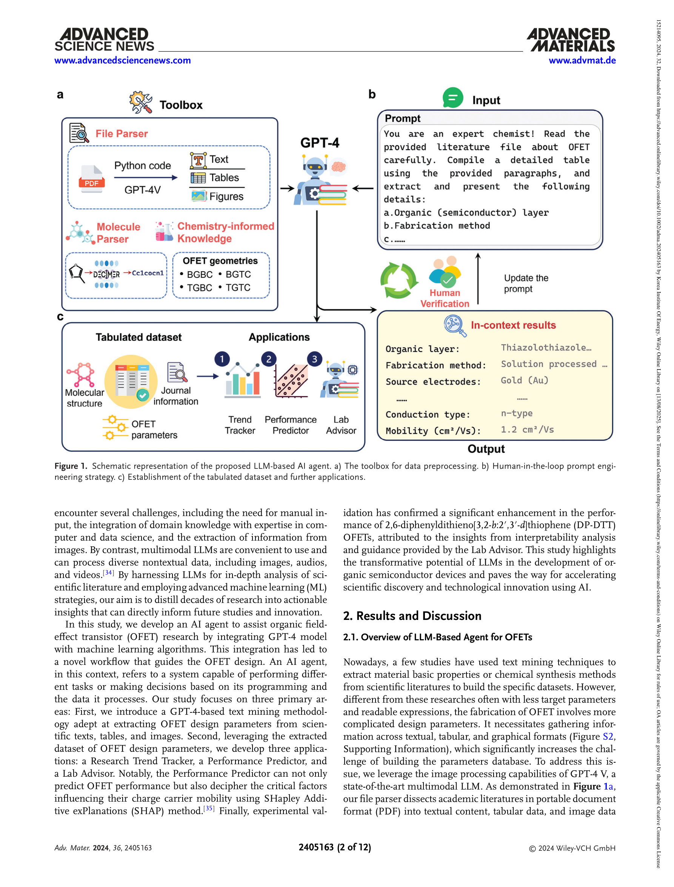
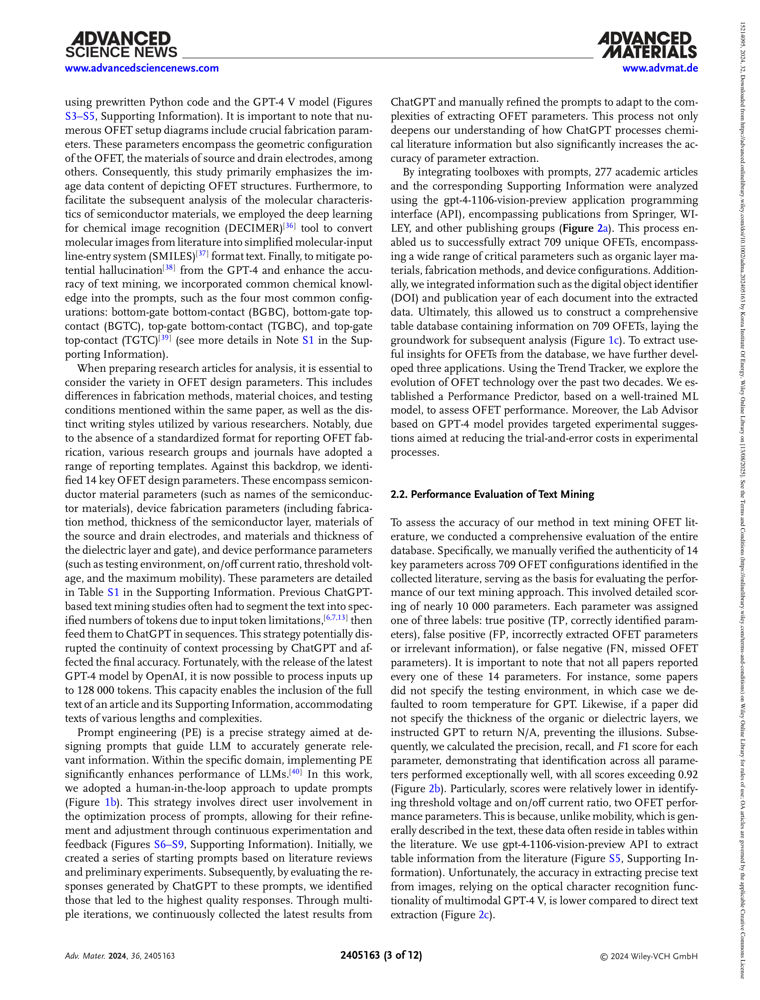
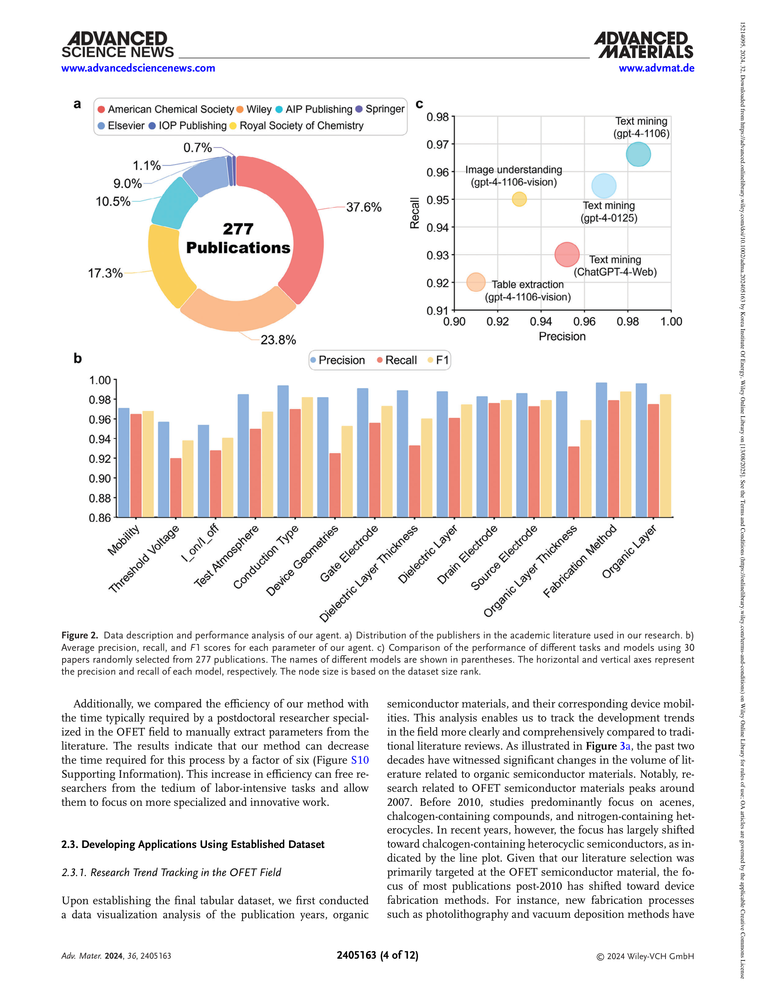
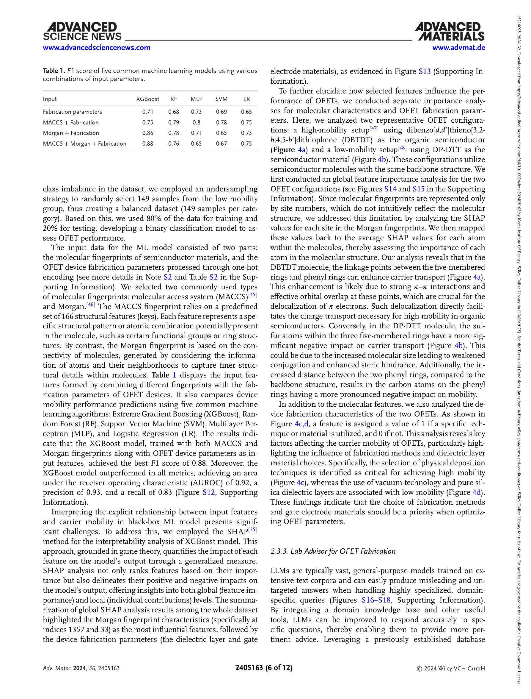
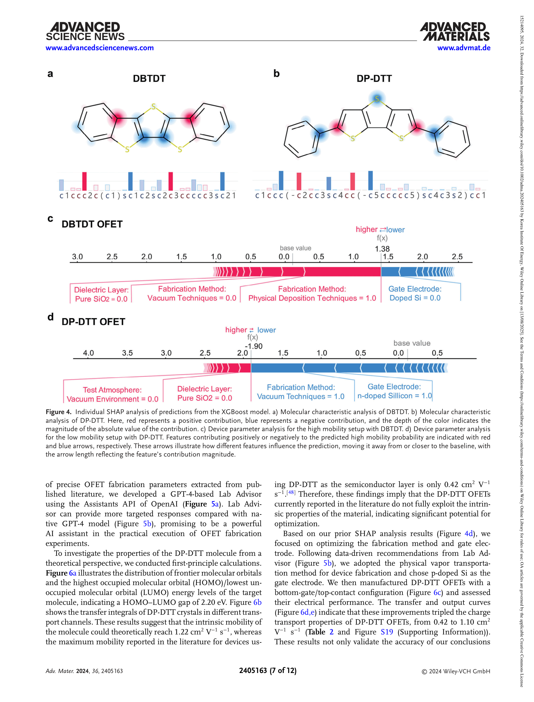

Figure 1
GPT-4와 머신러닝을 결합한 AI 에이전트를 설계하여 유기 전계효과 트랜지스터(OFET) 문헌에서 소자 파라미터를 자동 추출하고, 이를 기반으로 소자 성능 예측 및 실험 최적화 가이드를 제공하는 시스템을 구축하였다.

Figure 2
유기 반도체 소자(OFET)의 성능 최적화는 재료 선택, 공정 조건, 소자 구조 등 다양한 설계 파라미터가 복합적으로 작용하여 기존의 시행착오 방식으로는 비효율적이다. 수십 년간 축적된 학술 문헌에 이미 이러한 관계 정보가 내재되어 있으나, 텍스트/표/이미지에 분산된 정보를 체계적으로 추출하여 활용하는 것이 핵심 과제였다. 기존 NLP 도구(ChemDataExtractor 등)는 수작업 입력이 필요하고 이미지 처리가 불가능한 한계가 있었다.

Figure 3

Figure 4

Figure 5
Advanced Materials에 게재된 만큼 LLM의 과학 분야 실질 적용이라는 시의성과 실험 검증이라는 완결성 측면에서 높은 수준의 연구이다. GPT-4의 멀티모달 능력을 유기 소자 문헌 마이닝에 체계적으로 적용하고, 추출 데이터로 ML 모델을 훈련한 뒤 해석 결과를 실험적으로 검증한 end-to-end 파이프라인은 "AI for Science" 패러다임의 모범 사례이다. 다만 데이터 규모의 제한, 이진 분류의 단순성, 단일 재료 검증이라는 한계가 있으며, 향후 데이터베이스 확장과 연속적 성능 예측 모델로의 발전이 기대된다. OFET 분야에 특화된 사례이지만, 유사한 프레임워크가 OLED, 페로브스카이트 태양전지 등 다른 소자 연구에도 확장 가능하다는 점에서 방법론적 기여가 크다.